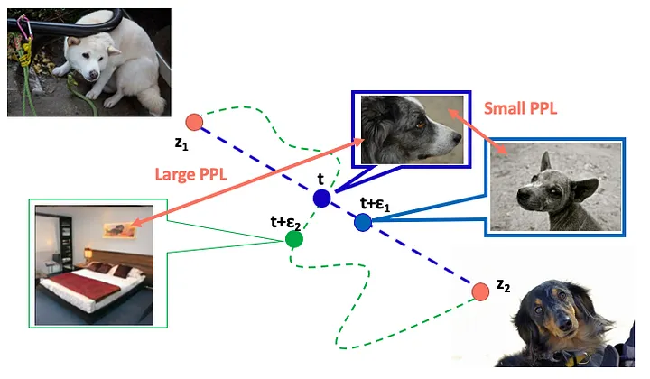
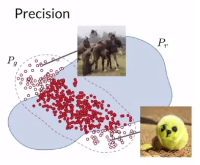
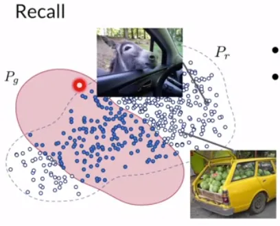

15.3 Evaluating GANs
How to tell a sample from a training point besides looking at it.
These notes walk through the lecture slides. The original deck is unchanged; use (slides) on the course hub if you want that PDF.
1. Evaluation of GANs
A GAN generator has no single training loss you can trust as a score. Watching does not tell you the samples are good. Evaluation is about quality and diversity of the fakes, with qualitative and quantitative checks.
2. Qualitative evaluation
Look at the images at several training stages. That is the first method. It does not scale, and it is not a protocol.
| Limit | Why it bites |
|---|---|
| Subjectivity | The reviewer’s taste is the metric. |
| Domain expertise | A dermatologist, not a random rater, has to judge skin lesions. |
| Limited scale | You can eyeball dozens of images, not tens of thousands. |
| No standard | Each application invents its own visual checklist. |
3. Quantitative evaluation
Metrics used while the GAN trains, next to the eyeball test.
| Property | Question |
|---|---|
| Fidelity | How realistic is each fake? Distance to its nearest real. |
| Diversity | Do the fakes cover the real distribution, or a few modes? |
| Authenticity / generalizability | Is the model inventing, or copying training points (overfit)? |
| Predictive performance | Train and test downstream models on synthetic data; does ranking match the real-data ranking? |
Latent interpolations are another visual check. Small perceptual path length means a short step in changes the image a little. Large PPL means a short step jumps to an unrelated image.

4. Fréchet Inception Distance (FID)
Pass reals and fakes through a classifier used as a feature extractor (Inception-v3 on ImageNet is the usual choice). Drop the class head. The two clouds of embeddings are treated as multivariate Gaussians. Compare them with the Multivariate Normal Fréchet distance (Wasserstein-2).
That distance is the squared gap between means, plus a covariance term: the trace of minus twice the matrix square root of the product.
Shortcomings. The features are only as good as Inception. You need a large sample. It is slow, and it uses only mean and covariance.
5. Kernel Inception Distance (KID)
KID is an alternative to FID. FID is a biased estimator, especially on small sets. KID’s expectation does not move with sample size, so it is the better default on small data. It is also cheaper, more stable, and simpler to code.
6. Inception Score
Inception Score also aims at diversity and fidelity. A pretrained Inception v3 model predicts class probabilities on each fake. Higher is more realistic and more diverse.
Two pieces, combined with KL divergence:
- Conditional probabilities: how confidently the classifier labels each fake.
- Marginal probabilities: entropy across the batch (higher entropy, more variety).
Limits. It never looks at real images. It is capped by Inception and ImageNet. FID often tracks fidelity and diversity more faithfully.
7. Precision and recall
Precision is fidelity: overlap of real and fake, relative to the non-realistic fakes. High precision means few junk images.

Recall is diversity: overlap of real and fake, relative to the reals the generator missed. High recall means better coverage of the real law.

8. Closing
FID, KID, Inception Score, precision, and recall are common, not exhaustive. Other metrics exist for other research goals. New ones appear often; the slides are a starter kit, not a census.
Practice
-
Name one way to tell a GAN sample from a training point besides looking at it.
-
What does high precision say about a GAN, and what does high recall say?
-
Why is watching the GAN loss not enough to judge sample quality?